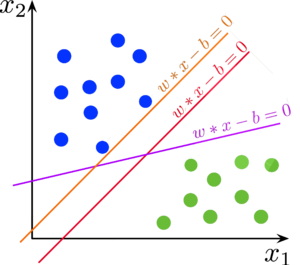
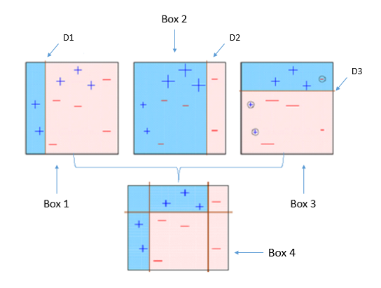
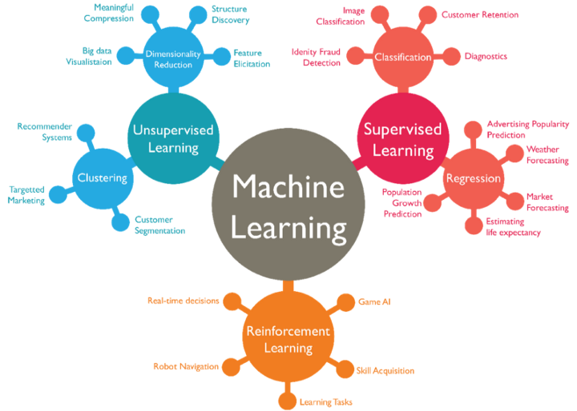
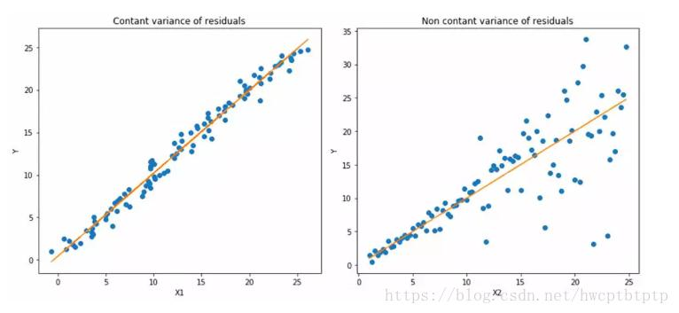
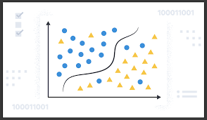
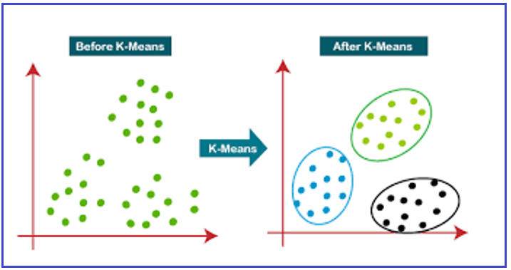
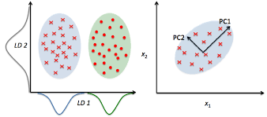

Machine learning
Presentation
prepared by Eugeniy Kuzmin @Syderi
Let's start
What is machine learning?
Machine learning is a branch of artificial intelligence, the main idea of which is that the computer does not just use a pre-written algorithm, but learns how to solve the task itself.
Who teaches the machine?
May be we? Maybe you? Both answers are wrong. The machine is learning on the data! They are called the training set.
• In practice, the training phase may precede the algorithm operation phase (for example, face detection on a camera)
• But additional training is also possible during the functioning of the algorithm (for example, spam detection).
Application areas
• Computer vision

Application areas
continuation
• Speech recognition
• Computational Linguistics and Natural Language Processing
• Medical diagnostics
Application areas
continuation
• Bioinformatics
• Technical diagnostics
• Financial applications
• Mind games
• Big Data
• Artificial Intelligence
• ...
machine learning methods
Supervised learning
One of the branches of machine learning. There are many objects (situations) and a set of possible answers (responses, reactions). There is some dependency between responses and objects, but it unknown. Only a finite set of precedents is known - pairs "object, response", called the training sample. Based on these data, you need to restore the dependency, that is, build an algorithm capable of producing a sufficiently accurate value for any object answer. To measure the accuracy of answers, the quality functional is introduced in a certain way. A teacher is understood to mean either the teacher herself selection, or the one who indicated the correct objects on the given objects answers.
machine learning methods
Unsupervised learning
One of the branches of machine learning. It studies a wide class of data processing problems in which only descriptions of a set of objects (training sample) are known, and it is required to detect internal relationships, dependencies, patterns that exist between objects.
Neural network
It is a sequence of neurons connected by synapses. The structure of the neural network came to the world of programming straight from biology. Thanks to this structure, the machine acquires the ability to analyze and even memorize various information. Neural networks are also capable of not only analyzing incoming information, but also reproducing it from their memory. In other words, the neural network is machine interpretation of the human brain, which contains millions neurons transmit information in the form of electrical impulses. In fact, a neuron in an artificial neural network represents is a mathematical function of which some value comes to the input and the output is the value obtained using that the math function itself.
Support Vector Machines
SVM — is a linear algorithm used in classification problems and regression. This algorithm is widely used in practice and can solve both linear and non-linear problems. The essence of the work The “Machine” of Support Vector Machines is simple: the algorithm creates a line or a hyperplane that separates data into classes.
Boosting
The procedure for sequential construction of the composition of algorithms machine learning, when each following algorithm seeks compensate for the shortcomings of the composition of all previous algorithms. AT Over the past 10 years, boosting has been one of the most popular machine learning methods. The main reasons are simplicity, versatility, flexibility (the ability to build various modifications), and, most importantly, a high generalizing ability.
machine learning tasks
- Regressions, Classifications, Clusterings
- Dimension reduction, Anomaly detection
Regressions
The model parameters are adjusted in such a way that the model is the best approximates the data.
Classifications
It is required to construct an algorithm capable of classifying arbitrary object from the original set.
Clusterings
The task of dividing a given sample of objects (situations) into disjoint subsets, called clusters, so that each cluster consisted of similar objects, and objects of different clusters were significantly different.
Dimension reduction
Allows you to reduce the dimension of data, losing the least amount of information. Applied to many fields such as object recognition, computer vision, data compression, etc. The calculation of principal components is reduced to the calculation of eigenvalues. vectors and eigenvalues of the covariance matrix of the original data or to the singular value decomposition of the data matrix.
Anomaly detection
In data analysis, there are two areas that are looking for anomalies: detection of outliers and "novelty". Like the ejection of "new object" is an object that differs in its properties from objects of the (training) sample. But unlike the outlier, it is not yet in the sample itself (it will appear after a while, and the task is times and is to detect it when it appears). For example, if you are parsing temperature measurements and discarding abnormally large or small, then you are struggling with emissions. What if You create an algorithm that, for each new measurement, evaluates how similar it is to the past, and throws out anomalous ones - you "fight novelty."

thanks for your attention
Syderi github